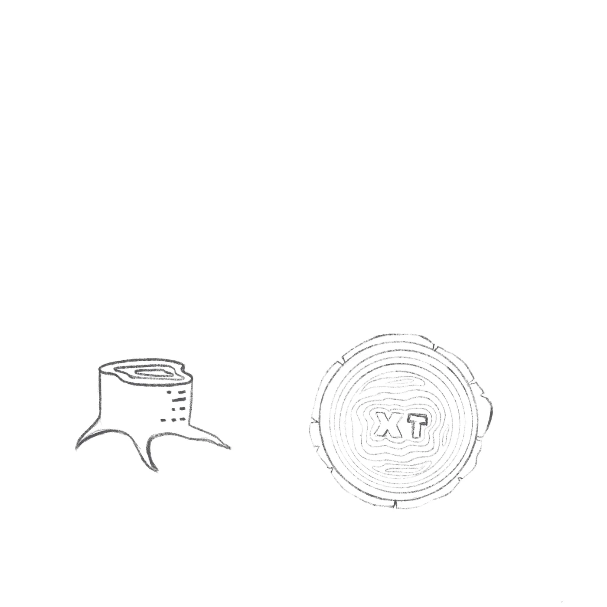
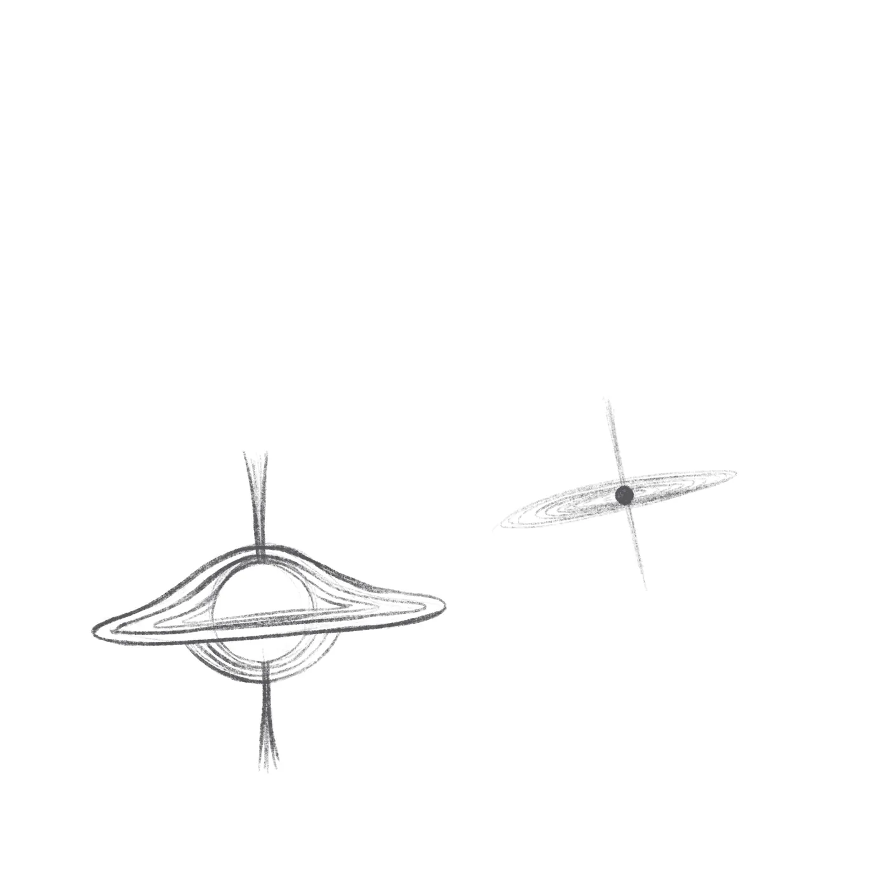
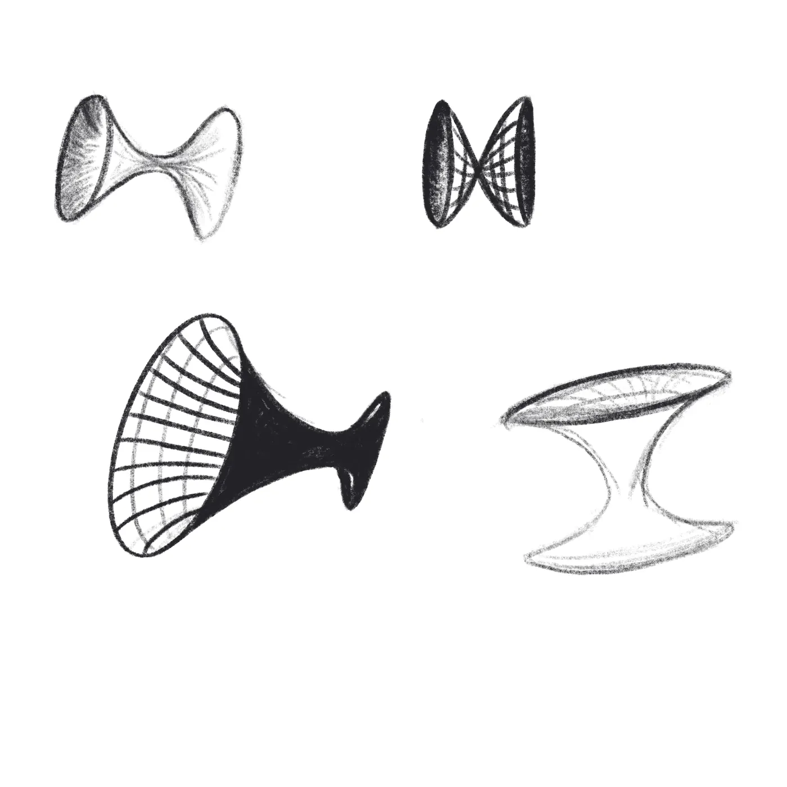
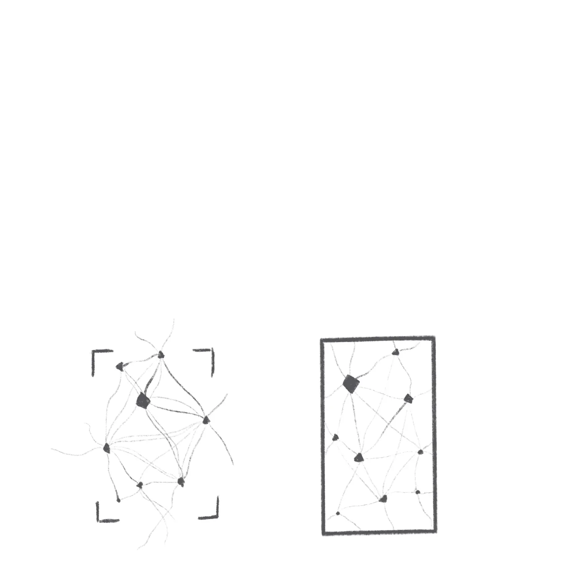
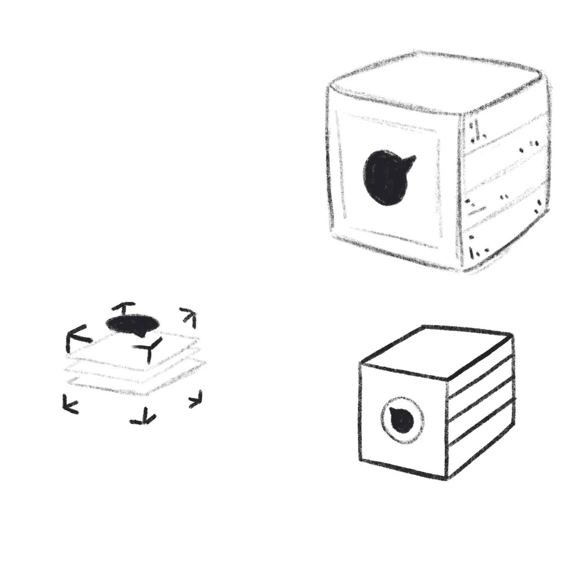
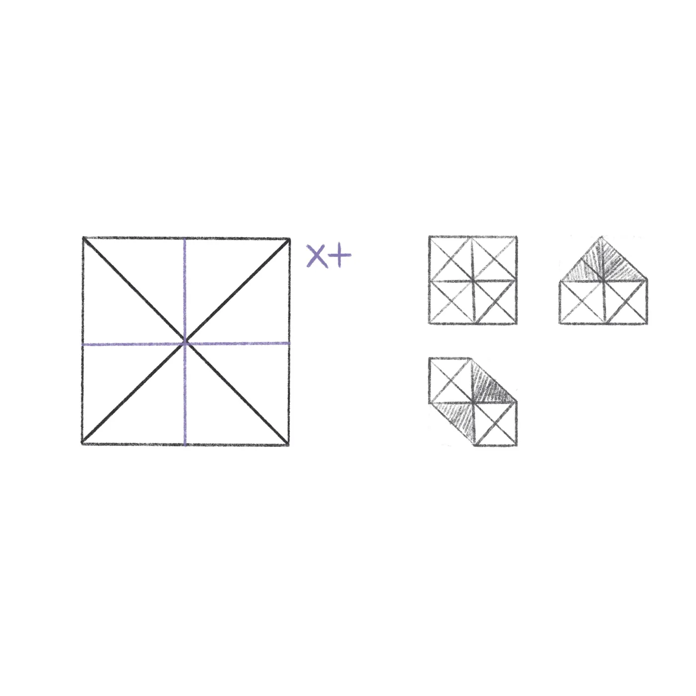
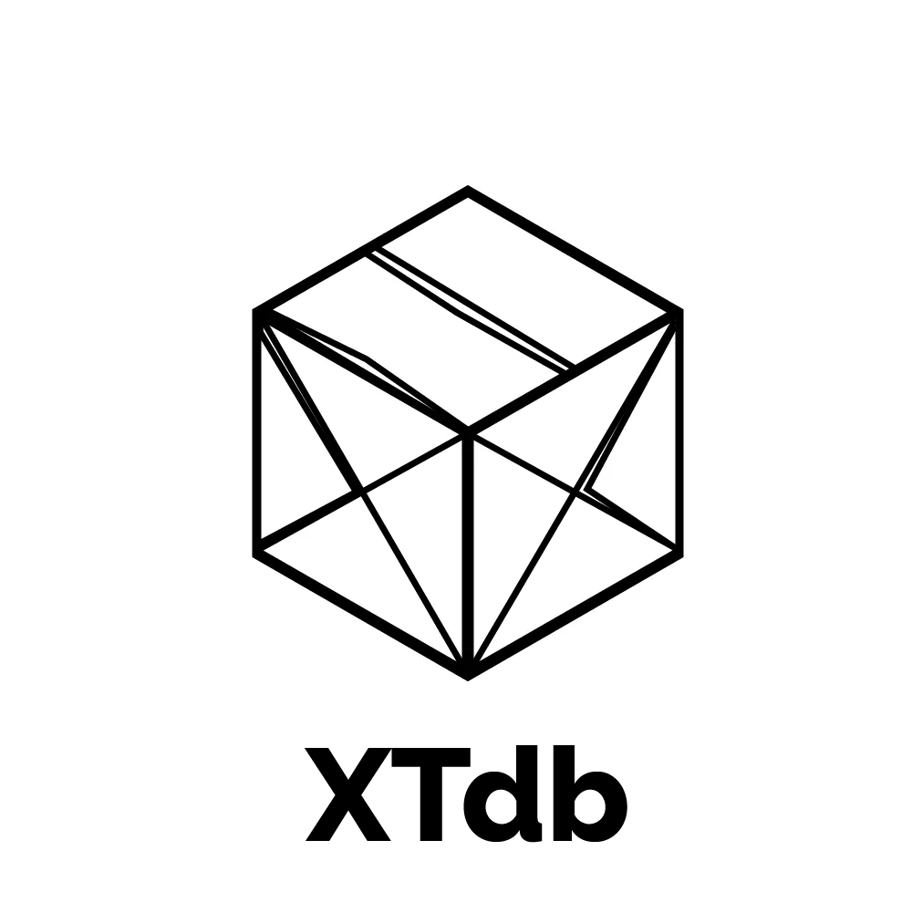
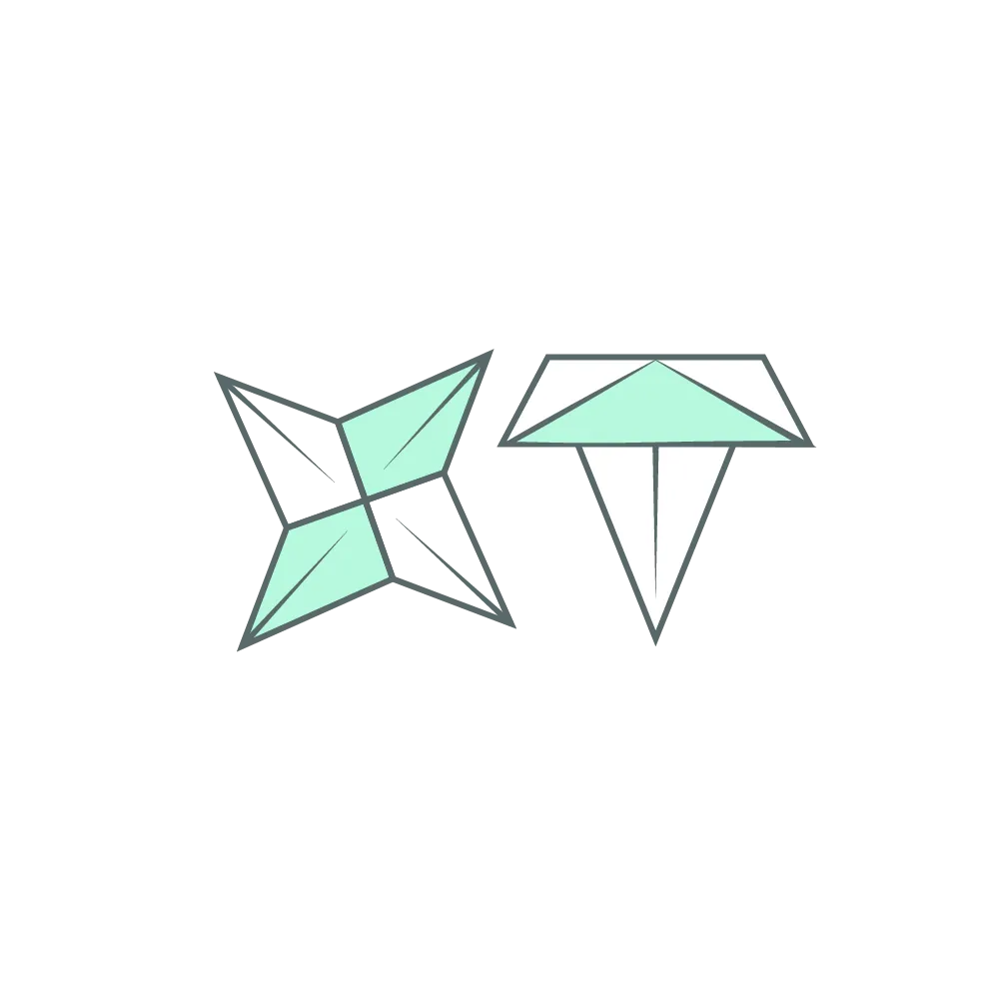

A technology database with a unique time-focused solution in search of a better visual identity.
Re-branding
Brand guidelines
Canada50–200 employees~$10M ARR








CRUXXTDB
where they came from
CRUX, with an arrow through the X.
XTDB was called CRUX — a JUXT-owned bi-temporal SQL and Datalog database. The name changed. The logo hadn't yet. CRUX's mark: a serif wordmark, a yellow-and-black arrow through the X, bold, 2010s-era tech confidence. It didn't say anything about time, memory, or the thing that made the database genuinely different.
concepts that capture remembering
Tree rings, wormholes, folds.
The brief we gave ourselves: the mark should feel human-made · inspiring · reliable · spatially and temporally persistent. We sketched five threads. Time as organic growth — a stump cut to show the years. Time as physics — a black hole curving space into itself, saturn-rings warping gravity. Time as geometry — hyperboloid wormholes, connected and stretched. Time as a net — nodes and edges, events that happened together. Time as paper — something that folds, holds the fold, and unfolds later as something new. Five starts. We kept following the one where the metaphor felt close enough to a database that an engineer would recognize it: a thing built of folds.
the pivot
Origami.
Origami is mathematical and human-made at the same time. A fold preserves — the paper remembers every crease. That's the database in a metaphor. We moved to mint-paper origami forms to test the shape language: star shuriken, mountain tent, layered planes. Origami refines.
the refinement
Small folds give the sense of folds.
Once we had the cube, the work became about making it honest. Subtle shading for a three-dimensional feel. A colored X in an hourglass fashion — the X from XTDB, the hourglass from time. The mark retains color, and a hero element in X, from the parent company JUXT. We ran through four near-final cube iterations: pencil construction lines, iso with one orange face, hex with multiple facets, then clean shading. Each one tighter.
where they landed
A mark that remembers.
The final XTDB cube: an origami fold, a depth shadow, an orange X that still reads JUXT. It moved from CRUX's blunt confidence to something quieter and more specific. The same database, now with a mark that tells the truth about it — and then it had to travel.